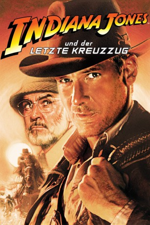

#395 Indiana Jones 3 - und der letzte Kreuzzug
Alternativ: Indiana Jones and the Last Crusade
Auszeichnungen: 1 Oscars gewonnen für 2 Oscars nominiert
 
 IMDB-Wertung: 8.3 / 10
IMDB-Wertung: 8.3 / 10  IMDB-TOP-Platzierung: 113
IMDB-TOP-Platzierung: 113  Metascore: 65
Metascore: 65 
Wir schreiben das Jahr 1938: Doktor Jones wird vom Mäzen eines Museums beauftragt, den Heiligen Gral und somit die wichtigste Reliquie der Christenheit zu finden. Jones' Einwand, es würde der falsche Jones gefragt werden, denn der eigentliche Experte sei sein Vater Henry, fördert nur die Erkenntnis zu Tage, dass Jones senior bereits die Spur aufgenommen hatte, mittlerweile aber verschwunden ist. Nun ist des Doktors Jagdinstinkt geweckt. Besorgt um das Wohlergehen des Vaters und mit dem Museumskurator Marcus Brody im Gepäck tritt Jones eine Reise in die alte Welt an, um das zustande zu bringen, was die mittelalterlichen Kreuzzüge nicht geschafft hatten: den Kelch zu finden, der beim letzten Abendmahl gereicht worden war und das Blut Jesu am Kreuz aufgefangen hatte. Erwartungsgemäß ist aber nicht nur der Doktor auf der Suche - auch die Schergen Hitlers wollen sich die Sagen umwobenen Kräfte des Kelches sichern, verheißt er doch das ewige Leben…
Jahr: 1989
Dauer: 127 Minuten
FSK: 12
Land: USA Studio: Paramount PicturesTonspuren: DD5.1 - ,
Untertitel: Deutsch, Englisch,
Auflösung: 1080p (1920x816) Größe: 27443 MB
Genre: Action, Abenteuer, Fantasy
Regisseur:  Steven Spielberg
Steven Spielberg
Drehbuch: Jeffrey Boam, George Lucas, Menno Meyjes, George Lucas, Philip Kaufman
Soundtrack: John Williams
Darsteller:
 Harrison Ford als Indiana Jones
Harrison Ford als Indiana Jones Sean Connery als Professor Henry Jones
Sean Connery als Professor Henry Jones Denholm Elliott als Marcus Brody
Denholm Elliott als Marcus Brody- Alison Doody als Elsa
 John Rhys-Davies als Sallah
John Rhys-Davies als Sallah Julian Glover als Walter Donovan
Julian Glover als Walter Donovan River Phoenix als Young Indy
River Phoenix als Young Indy Michael Byrne als Vogel
Michael Byrne als Vogel Kevork Malikyan als Kazim
Kevork Malikyan als Kazim- Alexei Sayle als Sultan
 Alex Hyde-White als Young Henry
Alex Hyde-White als Young Henry- Isla Blair als Mrs. Donovan
 Vernon Dobtcheff als Butler
Vernon Dobtcheff als Butler- Bradley Gregg als Roscoe
- Will Miles als Scout #1
 Pat Roach als Gestapo
Pat Roach als Gestapo Eugene Lipinski als G-Man
Eugene Lipinski als G-Man- Nina Armstrong als Flower Girl
- Nick Gillard als Tank Crewman Hit by Periscope , uncredited
 Derek Lyons als German Soldier , uncredited
Derek Lyons als German Soldier , uncredited Michael Sheard als Adolf Hitler , uncredited
Michael Sheard als Adolf Hitler , uncredited- Robert Eddison als Grail Knight
- Richard Young als Fedora
 Paul Maxwell als Panama Hat
Paul Maxwell als Panama Hat- J.J. Hardy als Herman
- Jeff O'Haco als Half Breed
- Vince Deadrick Sr. als Rough Rider
- Marc Miles als Sheriff
- Ted Grossman als Deputy Sheriff
- Tim Hiser als Young Panama Hat
- Larry Sanders als Scout Master
 David Murray als Scout #2
David Murray als Scout #2- Frederick Jaeger als World War One Ace
- Jerry Harte als Professor Stanton
 Billy J. Mitchell als Dr. Mulbray
Billy J. Mitchell als Dr. Mulbray- Martin Gordon als Man at Hitler Rally
- Paul Humpoletz als German Officer at Hitler Rally
- Tom Branch als Hatay Soldier in Temple
- Graeme Crowther als Zeppelin Crewman
- Luke Hanson als Principal SS Officer at Castle
- Chris Jenkinson als Officer at Castle
- Nicola Scott als Female Officer at Castle
- Louis Sheldon als Young Officer at Castle
 Stefan Kalipha als Hatay Tank Gunner
Stefan Kalipha als Hatay Tank Gunner- Peter Pacey als Hatay Tank Driver
- Suzanne Roquette als Film Director
- George Malpas als Man on Zeppelin
- Julie Eccles als Irene
- Lee Richards als Passenger on Airship , uncredited
- Tip Tipping als Tank Crewman , uncredited
Datei: X:\4-Tetralogie(A-K)\Indiana Jones\Indiana Jones 3 - und der letzte Kreuzzug (1989, FSK12, 1920x816).mkv seit 21.02.2015
Festplatte: HD Collection-3(N-Z)-6(A-Z)
 Es gibt insgesamt 7 Filme in der Gruppe '4-Tetralogie(A-K)\Indiana Jones'
Es gibt insgesamt 7 Filme in der Gruppe '4-Tetralogie(A-K)\Indiana Jones'